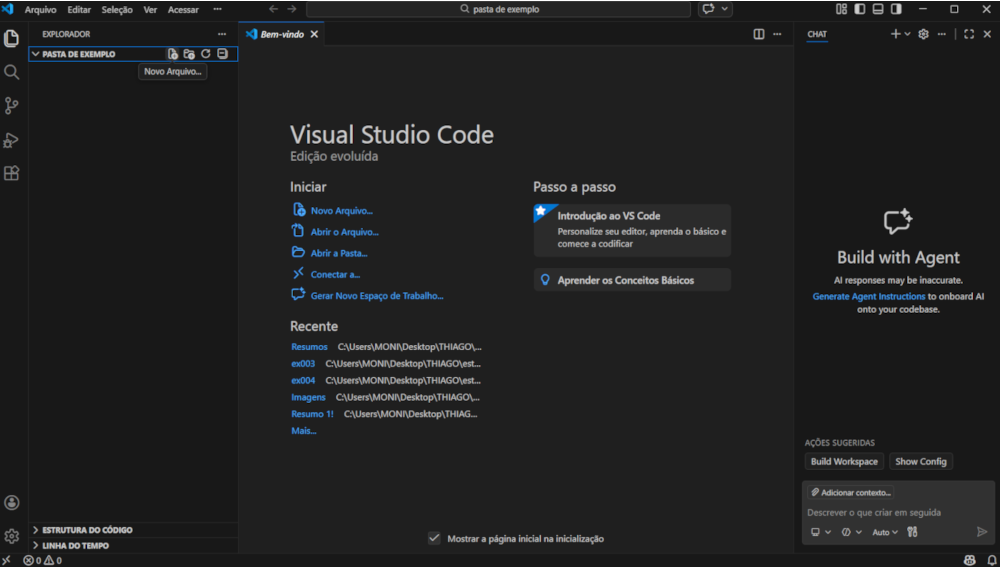
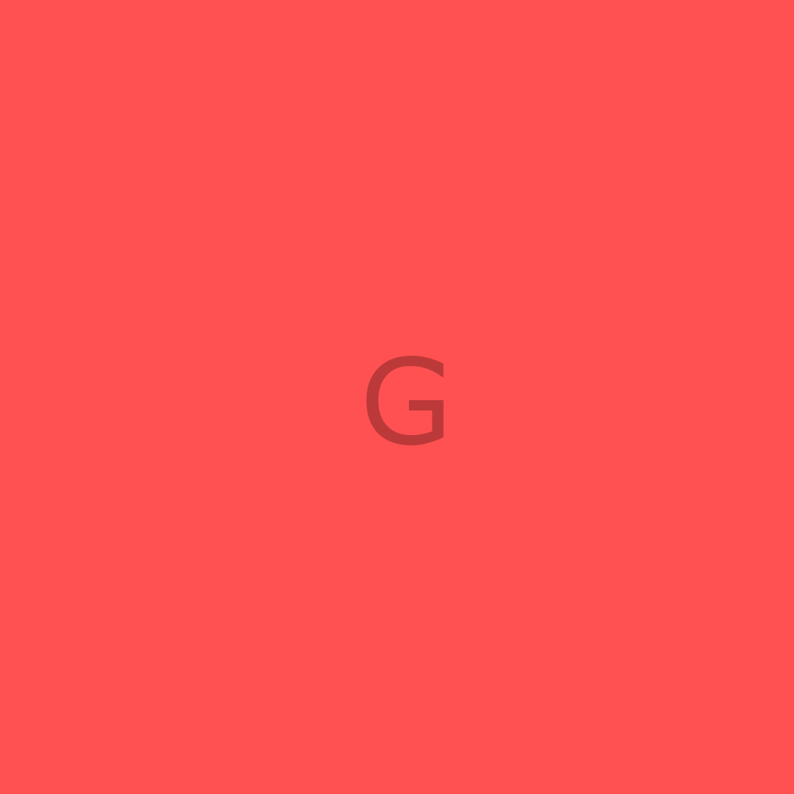
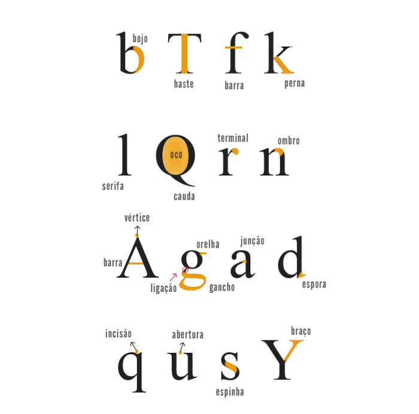
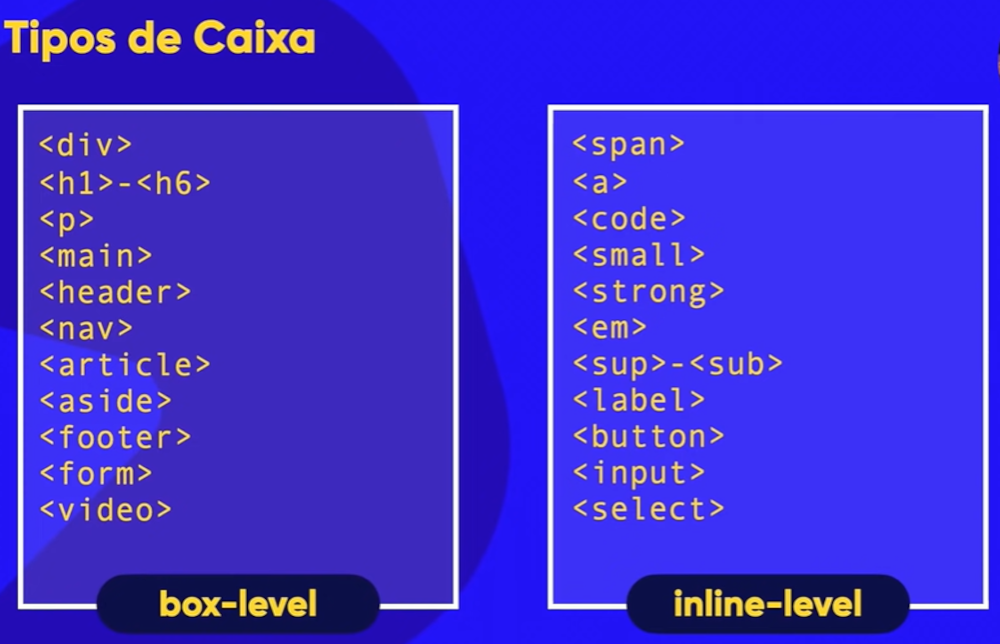
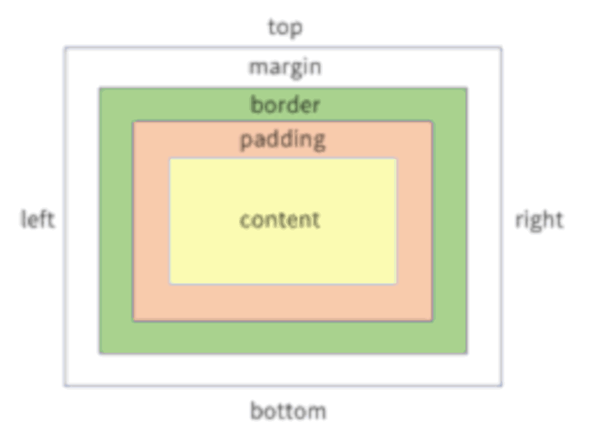

A internet não surgiu da noite para o dia. Na verdade, ela começou como um projeto militar nos Estados Unidos, lá nos anos 60, durante a Guerra Fria. Naquela época, a ideia era criar uma rede de comunicação segura e resistente a ataques para manter a comunicação entre bases militares.
O primeiro passo foi dado em 1969, quando o Departamento de Defesa dos Estados Unidos criou a ARPANET (Advanced Research Projects Agency Network). O objetivo era conectar computadores em diferentes locais para que eles pudessem se comunicar entre si, mesmo que uma parte da rede fosse danificada. A ARPANET começou conectando quatro universidades americanas e, aos poucos, foi crescendo, abrindo portas para novos avanços.
O que é a ARPANET?
A ARPANET foi a “avó” da internet. No início, ela era um experimento científico que permitia a troca de mensagens entre computadores. Os computadores, na época, eram gigantescos e ocupavam salas inteiras, mas já era possível enviar mensagens simples entre eles.
Uma curiosidade é que a primeira mensagem enviada na ARPANET foi “LOGIN”, mas, devido a uma falha, só as letras “L” e “O” foram transmitidas. Foi um começo bem simples, mas cheio de significado, porque provava que era possível comunicar-se por uma rede de computadores.
e-mail
Nos anos 70, uma inovação importante foi o e-mail. Esse recurso, inventado pelo programador Ray Tomlinson, foi o primeiro grande sucesso da ARPANET e permitiu que as pessoas trocassem mensagens de maneira mais rápida e eficiente. O símbolo “@”, que usamos hoje, nasceu aqui para indicar o destinatário e o domínio da mensagem. Esse foi um marco na história da internet!
A internet moderna
Nos anos 80, a ARPANET começou a crescer e evoluir para o que seria a internet como conhecemos hoje. Foi nesse período que surgiu o TCP/IP, o conjunto de protocolos que define as regras de comunicação entre computadores e que ainda é a base da internet. Em 1983, a ARPANET adotou o TCP/IP, e várias outras redes começaram a se conectar, formando a grande rede global.
Mas o que realmente popularizou a internet foi a criação da World Wide Web em 1989, por Tim Berners-Lee. A WWW trouxe a ideia de páginas da web e links, permitindo a criação de sites, blogs e o acesso ao que chamamos de internet. Em 1993, com o lançamento do primeiro navegador, o Mosaic, as pessoas comuns começaram a explorar a internet, e o resto é história!
protocolos
IP (Internet Protocol - IPv4/IPv6): Responsável pelo endereçamento e roteamento dos pacotes para o destino correto.
TCP (Transmission Control Protocol): Garante a entrega confiável, ordenada e sem erros dos pacotes.
UDP (User Datagram Protocol): Mais rápido que o TCP, mas menos confiável, usado para streaming e jogos.
HTTP/HTTPS (HyperText Transfer Protocol): Base para a transferência de páginas web (HTTPS adiciona criptografia de segurança).
FTP (File Transfer Protocol): Utilizado para transferência de arquivos entre máquinas.
SMTP, IMAP, POP3: Protocolos para envio e recebimento de e-mails.
DNS (Domain Name System): Traduz nomes de domínios (ex: google.com) em endereços IP.
Ferramentas
Visual Studio Code
Para baixar é simples, procure por Visual Studio Code no Google entre no site que aparecer primeiro (O oficial) e baixe o progama (bem simples né).
Agora vem a parte das configurações: Primeiro vamos deixar em português, para isso, va para a opção extensões, e pesquise por portuguese, e baixe o primeiro que aparecer, depois disso vá para as configurações do Visual Studio Code (é só clicar em uma engrenagem no canto inferior esquerdo da tela) e na aba de pesquisa, pesquise por word wrap, e coloque em on, isso serve para quando a sua linha de codigo estiver um pouco extensa o progama gerar uma quebra de linha, para o codigo não ficar um pouco grande, ou até bagunçado.
Depois disso, pesquise por size, que é o tamanho da fonte, caso a fonte (as letras) esteja muito pequena basta aumentar. E por ultimo, pesquise por theme e escolha entre, escuro (padrão do progama) ou claro.
Pronto, com tudo feito, você vai fazer o seguinte: Você vai criar uma pasta nos arquivos do seu computador e abrir essa pasta com o Visual Studio Code, basta clicar nela com o botão direito do mause e selecionar abrir com, e escolher o Visual Studio Code. Após abrir você vai ver isso aqui:

Você vai clicar em novo arquivo, ao clicar vai aparecer uma pequena aba, nela você vai digitar index.html (EXATAMENTE ASSIM) e apertar enter. depois disso, você vai voltar na pasta que você criou, e lá vai ter um novo arquivo dentro da pasta, esse arquivo é o index, que ao abrir você vai ser levado a uma pagina do Google, essa pagina é o seu site, que você vai criar usando o Visual Studio Code, recomendo você deixar o Visual Studio Code e a pagina no Google abertos, para você trabalhar no codigo enquanto vê o resultado na pagina do Google.
Uma coisa: sempre que você criar um codigo ou digitar algo, você tem que atualizar a pagina para ver o resultado.
A parte do codigo é simples, no lugar onde você vai digitar o codigo, você vai fazer o seguinte, digitar ! e clicar enter, só isso, e você ja vai ter a base para o codigo html, e na base para o codigo, mude o idioma primordial no site (que vai estar como en) para exatamente: pt-br.
Dica
No seu teclado, segure a tecla control (ctrl) e enquanto segura clique na tecla espaço. Após isso, vai aparecer um pequeno retângulo, nesse retângulo vai estar o arquivo index e algun outro arquivo ou pasta caso você tenha, clique na imagen, isso é bom por que você não vai precisar digitar o nome do arquivo letra por letra.
Outra coisa, você pode colocar imagens que estejam tanto na pasta, como em uma sub pasta, ou só colocando a URL mesmo.
Dica 2
No Visual Studio Code existe um atalho que se acessa usando control(ctrl) + shift + p. Aparecera uma tela, nessa tela você vai digitar 'abb' e então dar enter e digitar a tag que você quiser usar. Basicamebnte, você irá envelopar aquilo que foi selecionado.
Titulos
Para titulo é só usar a tag <h1><h1> como um titulo principal, e <h2></h2> como um subtitulo, e assim sucessivamente até h6.
Paragrafos: <p> ... </p>
Para escrever paragrafos, basta colocar tudo que você quer escrever no meio das tags <p> e </p>. Assim:<p>texto</p>
Quebras de linha: <br>
Para quebras de linha, basta colocar a tag <br> abaixo do que desejar. Exemplo:
Eu passeava pela rua
<br>
Até que vi um gato! Gatos são legais.
Simbolos Δ!
Para simbolos é sò usar & + uma palavra chave e ; Simples! Exemplo: & + reg e ; = ®
Para emojis, o passo a passo é: Vá para o site emojipedia, escolha o seu emoji. Depois va em informações tecnicas e copie o codigo que representa o emoji. Apos copiar, va para o seu documento html e digite a tag &#x + o codigo que você copiou e finalize com ; (ponto e virgula).
Exemplo: &#x + 1F643 e ; (ponto e virgula). Que ficaria: 🙃
Carga e imagens
Você pode e deve, colocar imagens no seu site! E para isso você deve primeiro entender uma coisa, você NÃO pode colocar qualquer imagen no seu site, pois ela pode ter direitos autorais. Mas como pegar uma imagen sem direitos autorais? É simples!
Procure no Google a imagen que você deseja, e logo em seguida acesse 'ferramentas' e coloque os direitos de uso como Creative Communs (CC). Assim todas as imagens que aparecer serão livres para uso, seja uso comercial ou com modificação. Ou você pode ir no site unsplash, e procurar a imagen que você quer, todas as imagens lá são livres para uso.
Agora que você sabe como procurar uma imagen sem que ela tenha direitos autorais, vou te ensinar como colocar uma imagen no seu site.
Basta você digitar <img src="" alt="">
Em src="" você vai colocar o endereço da imagen (Ou URL), e para isso, basta você clicar com o botão direito do mouse na imagen e depois clicar em copiar endereço. E em alt="" você vai fazer uma breve descrição da imagen, para aqueles que de alguma forma não conseguem ver a imagen. Ou você baixa a imagen, e coloca ela junto dos arquivos do seu site, e no vs code, é só apertar crtl + espaço. Que irá aparecer os arquivos.
background-color
background-color é uma tag CSS3 que serve para mudar a cor de fundo do seu site. Mas como usa-la? É simples! Basta você ir ate a área head do seu codigo HTML5 e adicionar a tag <style></style>. E dentro da tag você vai adicionar outra tag, a tag body (sem os <>),e então abrir chaves ( {} ). Dentro das chaves, basta adicionar a tag background-color:rgb(x,x,x); Agora é só mexer na cor até ficar do jeito que você quer.
Endereço
Vou mostrar como funciona na base de exemplos. Se você quiser dizer um endereço, basta fazer isso. Ex: eu moro na <address>Rua X, X - X - AL </address>
Formatação de textos
Principais formatações
Negrito/Destaque
Nesta frase temos um termo em negrito usando a tag <strong></strong>
Nesta frase temos um termo em destaque usando a tag <b></b>.
Itálico/Ênfase
Nesta frase temos um termo em itálico usando a tag <i></i>.
Nesta frase temos um termo em Ênfase usando a tag <EM></EM>.
Texto marcado
Podemos fazer textos marcados com a tag <MARK></MARK>.
Ou textos marcados com style
Texto grande e pequeno
Para deixar textos grandes ou pequenos é só usar a tag <big></big> ou a tag <small></small>.
Porém!... A tag big está obsoleta! Portanto não é recomendado que você a use. Mesmo que ela ainda esteja funcionando, pois ela pode parar de funcionar em breve.
Texto deletado
Marcar um texto como deletado serve para indicar que ele deve ser lido, mas nâo considerado. E para fazer isso você deve usar a tag <del></del>.
Texto inserído
Marcar um texto como inserído significa dar ênfase e indicar que ele foi adicionado depois. Para fazer isso basta usar a tag <ins></ins>
Tambem podemos fazer isso com a tag <u></u>.
Texto sobrescrito
Um texto sobrescrito serve para coisas como x-23+3. Para marcar um texto como sobrescrito é só usar a tag <sup></sup>. Basicamente tudo que estiver dentro da tag <sup></sup>, ficara como o 23 ou exx.
Texto subscrito
Um texto subscrito serve para coisas do tipo H2O. Para fazer isso basta usar a tag sub. Basicamente tudo que estiver dentro da tag <sub></sub> ficara um pouco para
baixo, como aqui: Exx.
Outras formatações
Código-fonte / Pré-formatação
Ex: O comando document.getElementById('teste') é escrito em linguagem JavaScript.
Se você prestar atenção, o codigo apresentado não parece realmente um codigo, tá até meio dificil de ler, por conta da fonte. E para resolver isso, é só colocar o codigo, dentro da tag <code></code>:
get.ElementById('teste')
Outro exemplo
num = int(input('digite um número'))
if num % 2 == 0:
print(f'O número {num} é PAR')
else:
print(f'O número {num} é ÍMPAR')
print('Fim do progama')
Denovo, aqui acontece o mesmo, mas... Ao usarmos a tag <code></code>, ele fica assim:
num = int(input('digite um número'))
if num % 2 == 0:
print(f'O número {num} é PAR')
else:
print(f'O número {num} é ÍMPAR')
print('Fim do progama')
Pode até parecer com um código, mas não está com os espaçamentos que eu coloquei. Para isso, basta colocar tudo dentro da tag pre:
num = int(input('digite um número'))
if num % 2 == 0:
print(f'O número {num} é PAR')
else:
print(f'O número {num} é ÍMPAR')
print('Fim do progama')
Citações simples
Como dizem: O computador é um burro muito rápido.
Explicando brevemente, ao colocar um texto dentro da tag <q></q> ele ficara automaticamente com aspas, como em uma citação.
Citações completas
Segundo Jeff Noble, no seu livro HTML para leigos:
A diferença entre os elementos inline e um bloco de texto é importante. Os elementos HTML neste capítulo descrevem os blocos de texto.
Citações completas, são coisas como citações em livros. Para isso, basta colocar a o texto dentro da tag <blockquote></blockquote>.
Abreviações
Eu amo HTML e CSS.
HTML e CSS, são Abreviações, e para marcá-las como Abreviações, basta coloca-las entre as tags <abbr title=""></abbr>
E em title, colocar o significado da Abreviação.
Aqui está um exemplo de como fica quando você usa essa tag, basta passar o mouse por cima para ver:
Eu amo HTML e CSS.
Tag <hr>
A tag <hr> coloca uma linha abaixo do seu titulo, como tá no inicio da pagina.
Como colocar <>
para colocar <> sem que seja tratado como um codigo, e sim parte do texto, basta usar & + lt e ; e finalizar com & + gt e ;
Comentários
Para fazer Comentários no seu codigo você deve usar
<!--Aqui você escreverá seu comentário.-->
Listas
Listas ordenadas
Listas ordenadas são listas que seguem em ordem crescente, exemplo: 1, 2, 3, 4. Ou a, b e c.
Para criar listas ordenadas você deve usar a tag <ol></ol> e dentro da tag <ol></ol> você irá colocar outra tag, a tag li. Não é obrigatório colocar uma tag de fechamento na tag li. É na tag <li> que você colocará o item da sua lista, e se você precisar de mais de um item, o que geralmente é o caso, basta abrir outra tag <li>.
Seguindo esses passos, é assim que ficaria o codigo:
<ol>
<li></li>
</ol>
E assim ficaria a sua lista:
Acordar
Tomar café da manhã
Escovar os dentes
Além disso, você pode personalizar a tag <ol></ol>. Você pode fazer a lista em letras: a, b, c... Ou em números mesmo, ou em algarismos românos, letras maiusculas, algarismos minusculos.
E para issso é só, na tag <ol></ol>, você dar um espaço depois do ol e digitar type="". Aí você pode escolher entre 1 (números), A (letras maiusculas), a (letras minusculas), i (algarismos românos em minusculo) e I (algarismos românos em maiusculo).
Outra coisa, você pode indicar quando a lista começa, seja no 1, 2, 3, ou no a, b, c, no I, II, usando o tag start, basta dar um espaço após a tag type, e digitar start="" e no start colocar 1,2 3.
Listas não ordenadas
São listas que não possuem uma ordem, apenas listam itens, como em uma lista de compras no supermercado. Basta usar a tag ul, e dentro dela colocar a tag li. A tag ul também tem os seus tipos, que são: disc, circle e square. Ex
Tomate
Feijão
Arroz
Macarrão
Leite
Danone
Listas Mistas 1.0
Para criar listas mistas é só criar uma <ol></ol> ou uma <ul></ul>, e abaixo de uma tag <li> que você criou, ex: Você criou uma <ol></ol> de jogos favoritos, e colocou uma <li> como Mario, abaixo de <li>, você criará uma outra <ul></ul>, ou <ol></ol> , e citar por meio de outra <li>, os jogos de Mario que você mais jogou. EX:
Mario
Marios Bros
Listas de definições
Para criar uma lista de definições, basta abrir uma tag <dl></dl>, depois abrir uma tag <dt></dt> ( Que é o termo), e por fim abrir abaixo de <dt></dt>, uma tag <dd></dd> (descrição do termo). Ex:
HTML
linguagem de marcação para a criação do conteudo de um site.
CSS
Linguagem de marcação para a criação do design de um site.
JavaScript
Linguagem de progamação para a criação da interatividade de um site.
ponto importante:
Caso você queira que a sua lista, baseada em LETRAS, seja maiusculas ou minusculas, comece em uma ordem especifica, você não deve colocar, EX: e/E ou h/H. A lista pode até ser em letras, mas a ordem é numerica, então, se você quer que comece na letra 'e' por exemplo, você colocaria start="5".
Links
Links externos
Para colocar links que vem de fora do seu site (links externos), como por exemplo, o seu canal do youtube, basta usar a tag <a href=""></a>. E isso é bem simples, basta dentro dela colocar a frase que vai ser usada como uma espécie de botão para o link, e em href, você colocará o link. Outra coisa, dentro da tag <a href=""></a>, você vai dar um espaço e digitar target="_blank", e então dar mais um espaço e colocar rel="external", que no final ficaria desse jeito: <a target="_blank" rel="external" href="Aqui vai ser colocado o link">Frase</a>. Exemplo:
Você pode fazer ligações atraves de links para paginas dentro do seu site, por exemplo, no Visual Studio code você pode fazer isso criando outro aquivo index. E na sua pagina principal (ou primeira pagina, melhor deixar como primeira), você vai usar a tag <a href=""></a> e na tag você vai colocar qualquer texto, tipo: acesse a segunda pagina aqui! E no href=""vai colocar o link, que no caso não precisa, é só apertar, com o cursor de texto entre as aspas, crtl + espaço, e selecionar o arquivo index que você criou. Não precisa ser index, pode ser pag002.html
No final, o codigo ficaria assim:
clique <a href="index.html">aqui!</a> para ir para a segunda pagina.
Outra coisa, você precisa colocar depois da tag a, o rel="next". Para indicar ao navegador, que essa é a segunda/proxima pagina. Isso, na primeira pagina, pois o link ta levando para uma proxima pagina. E na segunda, ao invés de next, você colocará prev, que indica que para o navegador, que esse link leva para uma página anterior.
e no final, o codigo em cada pagina ficaria assim:
Pagina 1
Clique <a href="pag002.html" rel="next">aqui!</a> Para ir para a segunda pagina.
Pagina 2
para voltar para a primeira pagina clique <a href="index.html" rel="prev">aqui!</a>
links internos em outra pasta
Antes de fazer links, que levam para uma pagian que esta em uma pasta diferente, precisamos criar uma, e com o Visual Studio Code é simples. Vá para a pasta que esta o seu arquivo index, e crie uma nova pasta, por exemplo, uma pasta chamada noticias. Agora, no VS code, você ira no Explorador ( é onde fica tudo que ta na pasta, por exemplo, as imagens, as pag e etc...) e na pasta noticias, você irá apertar com o botão direito do mouse e selecionar novo arquivo, e colocará o nome como pag003.html. Tem que ser sempre assim, pag003, pag005... pag..7 e por aí vai. pois isso indica a ordem da página e ajuda ao navegador, a tratar a aquela pagina como ela sendo realmente uma pagina, seja ela anterior ou posterior á alguma outra pagina.
Agora, para um link, é a mesma coisa de antes, porém, como a pagina tá em uma outra pasta você vai fazer de um jeito um pouco diferente. Você vai apertar o crtl + espaço, e selecionar a pasta noticias, e nela, selecionar a pag003.html.
No final o codigo ficaria assim: <a href="noticias/pag003.html" rel="next">Acesse também a nossa página de notícias!</a>
E para voltar (isso estando na pag003.html no caso a pagina de notícias) é um pouco diferente. no href="", invés de pag001.html ou index.html, ou seja lá qual nome você deu para a primeira página, você irá colocar dois pontos, barra, pag001.htm ou index, emfim, o nome que você colocou. Assim que você colocar ../ irá aparecer uma barrimha com os arquivos que estão na outra pasta. Como aparece normalmente ao apertar crtl + espaço. Aí você vai selecionar a primeira pagina, ou a segunda, se quiser voltar para ela. E o de sempre, colocar o rel="prev". Para indicar ao navegador que o link leva para uma página anterior.
você deve colocar no rel="" nofollow, isso indica que você não tem tanta confiança no link, se ele é oficial, mas mesmo se for, de confiança, é bom colocar. Agora se o cliente pedir para o link não ser nofollow, aí você não coloca.
Primeiro precisamos de um arquivo para baixar, e isso é bem simples. Na pasta onde esta o index, as pags, e as imagens você ira criar uma nova pasta, e nela colocar o arquivo PDF. E para colocar um link que direciona para uma outra pasta, isso você ja sabe né. O diferencial é que agora você vai dar um espaço depois tas aspas e colocar download=""
E entre as aspas você ira colocar o arquivo PDF. Irei dar um exemplo de como o codigo ficaria para você entender melhor:
<a href="Livro/PDF-de-exemplo.pdf" download="PDF-de-exemplo.pdf" type="applicatin/pdf">Baixar o livro em PDF</a>
Mídias em HTML5
Imagens dinâmicas

Se você diminuir ou aumentar a aba do navegador, você irá perceber que a imagen se adequa ao tamanho, e fazer isso é bem simples.
Você vai precisar de 3 tamanhos para a sua imagen, uma versão de 1000px, uma de 700px, e uma de 300px de largura, altura nem importa tanto assim. Você irá colocar as imagens junto do index, e as coisas perto dele na pasta.
Agora, você irá usar a tag <picture></picture> e dentro dela, a tag <img src="" alt="">. Agora, se a imagen em <img src="" alt=""> for de 1000px, pessoas em celular ou tablets vão ter que arrastar para o lado pra ver, e isso é ruim. e para resolver, basta acima de <img src="" alt="">, colocar <source media="(max-width: )" srcset="" type="image/"> em (max-width: ) você irá colocar o tamanho maximo da largura da imagen, se o tamanho maximo da tela do usuario for menor que, por exemplo, 1000px, a imagen será substituida por outra, que no caso é a versão de 700px (serve pra tablets e pc), e para isso, você irá colocar a imagen, em srcset="". Em type, você deve completar com png, e você fará o mesmo, para 300px. No final, ficaria assim:
<picture>
<source media="(max-width: 750px)" srcset="imagens/foto-p-ex.png" type="image/png">
<source media="(max-width: 1050px)" srcset="imagens/foto-m-ex.png" type="image/png">
<img src="imagens/foto-g-ex.png" alt="Imagen grande de exemplo">
</picture>
Áudios
Para colocar audios, você deve usar a tag, audio, assim:
Para colocar vídeos do Youtube no seu site, basta você ir no vídeo e ir em compartilhar, depois em incorporar, e então você vai copiar o link, e colar no HTML do seu site.
Estética
Cores
Uma boa forma de escolher as cores do seu site é usando o circulo cromático.
Recomendo você usar o circulo cromático do Adobe. É totalmente grátis.
Tipografia

Fontes
Fontes são muito importantes no seu site, e devem ser escolhidas com bastante atenção. Pois não adianta ter um site com um ótimo conteudo, mas ter uma apresentação que deixa a desejar. Então, na minha atual opnião, eu recomendo você utilizar a fonte Arial, Helvetica, sans-serif para tiltulos e subtitulos, e a fonte 'Times New Roman', Times, serif para paragráfos. Para colocar fontes é só você usar a tag font-family.
Shorthand
Shorthand é uma tecnica que ajuda você a encurtar o seu codigo css. Por exemplo, para usa-la em fontes (caso você tenha varias tags fontes) você deve usar a tag font:, e nela, colocar as suas tags font nesta ordem: font-style → font-weight → font-size → font-family. Se você tem, por exemplo, em um h1 tags font assim:
h1 {
border: 5px solid black;
padding: 6px 6px 6px 6px; ou padding: 6px;
margin: 20px 20px 40px 20px;
outline: 5px dashed gray;
}
Alinhamento de texto
Existem 4 tipos de alinhamento de texto usando css, justify, right, center, left. Que podem ser usados em diferentes textos (p, h1...). Por exemplo, se você tem uma tag h1 e que colocar ela no centro no seu site, como um titulo mesmo, é só você ir no css do seu site e colocar o h1 como text-align: center;
O mesmo vale para justify, right e left.
Identificações, pseudo-classes e pseudo-elementos
id
Os id são uma forma de você identificar um elemento no HTML do seu site, para possibilitar uma personificação mais complexa dele no css. Para aplicar uma id á uma tag html basta você ir nela, por exemplo, uma tag h1, dar um espaço e color car id="". Dentro de id é que você irá colocar a identificação dela, por exemplo id="Titulo-principal". E na área de css do seu site você irá colocar # e a id que você colocou:
#Titulo-principal
Alem disso, você não pode colocar mais de um elemento com a mesma id. Isso é o papel da Class
Class
As class servem como uma forma de identificação de um elemento, porém, diferente do id ela pode ser utilizada mais de uma vez em um elemento. E para usa-la você deve colocar . (ponto) e o nome da Class.
Pseudo-classes
Pseudo-classes servem para você personalizar também, porém elas precisam estar relacionadas a um elemento ou uma classe. As Pseudo-classes estão relacionadas a o estado de um determinado elemento, se ele esta active, empty, entre outros. E para usa-la você vai usar : (dois pontos). Se eu por exemplo, criar uma div e quiser atribuir a ela o hover basta eu digitar:
div:hover{
}
Ao colocar hover eu estou dizendo que se o usuario passar o mouse por cima daquela div, algo irá acontecer. E podemos definir o que irá acontecer de uma forma bem simples, por exemplo, colocando a tag background-color. Logo se o usuario passar o mouse por cima o background da div irá mudar. Exemplo:
01
01
03
Elementos dentro de uma div
Se você colocar uma div no seu style e adicionar > e algum outro elemento, esse elemento que foi colocado depois de > será afetado pelo que estiver escrito dentro dele, por exemplo: div > p {...}. O p que estiver dentro da div irá sofrer as alterações que você colocou. Exemplo:
Neste style eu personalizei a div e depois eu indiquei que o p que esta dentro da div terá o display: none;, ou seja, o p ficará invisível. Porém se eu passar o mouse por cima ( como está nas ultimas declarações) o p terá o display: block;, ou seja ficará visivel, e terá como eu coloquei, color e border personalizados.
Você pode também atribuir a Pseudo-classe visited a um link. O que indica que, todo link que ja foi visitado será alterado de acordo com o que estiver dentro de a: active{}. Por exemplo, se eu colocar color: green., todo link que ja foi visitado ficará verde.
Pseudo-elementos
Os Pseudo-elementos interferem diretamente com o conteudo do seu site, que para representa-lo usa-se :: (2x dois pontos). Por exemplo, se você colocar a::after{ content: '\2B05' } os links ficaram com uma seta, que é representada pelo codigo entre aspas. O mesmo serve para a::before{ content: '\27A1' }.
Caixa
Tipos de caixa

Modelo de caixa

A partir do modelo de caixa você pode personalizar a vontade as box do seu site, seja ela em <h1> - <h6> ou <p>, entre outros.